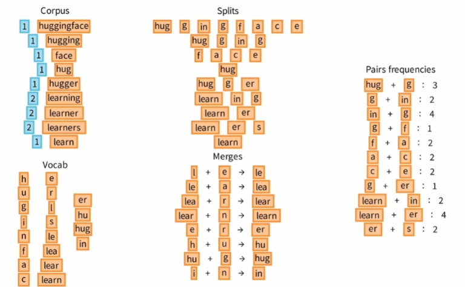
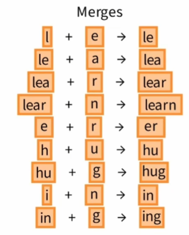
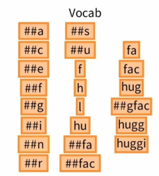

What is pre-tokenization?
The pre-tokenization operation is the operation performed after the normalization of the text and before the application of the tokenization algorithm. 预分词操作是在文本标准化之后、应用分词算法之前执行的操作。
This step consists in applying rules that do not need to be learned to perform a first division of the text.
Byte Pair Encoding tokenization
The BPE algorithm was initially proposed as a text compression algorithm, but it is also very well suited as a tokenizaer for language models.
The idea of BPE is to divide words into a sequence of “subword units” which are units that appear frequently in a reference corpus. BPE 的思想是将单词划分为一系列“子词单元”，这些单元是参考语料库中频繁出现的单元.
BPE training is done on a standardised and pre-tokenised corpus. BPE 的训练是在标准化和预标记化的语料库上完成的。
-
BPE training starts with an initial vocabulary and increases it to the desired size. BPE 培训从初始词汇量开始，然后将其增加到所需的大小。
 -
To tokenize a text, it is sufficient to divide it into elementary units and then apply the merging rules successively. 要对文本进行标记，只需将其划分为基本单元，然后依次应用合并规则即可。
hugs -> h u g s -> hu g s -> hug s -> hugs

WordPiece Tokenization
The learning strategy for a WordPiece tokenizer is similar to that of BPE but differs in the way the score for each candidate token is calculated. WordPiece 标记器的学习策略与 BPE 类似，但不同之处在于计算每个候选标记的分数的方式。
Thus at a fixed frequency of appearance of the pair, if the subparts of the pair are very frequent in the corpus then this score will be decreased.
To tokenize a text with a learned WordPiece tokenizer we look for the longest token present at the beginning of the text.
huggingface -> huggi ##ngface -> huggi ##n ##gface -> huggi ##n ##gfac ##e
Unigram Tokenization
Unigram Language model subword tokenization algorithm
Unigram model is a type of Statistical Language Model assuming that the occurrence of each word is independent of its previous word. The overall training strategy is to start with a very large vocabulary and then iteratively reduce it. Unigram model是一种统计语言模型，假设每个单词的出现与其前一个单词无关。考虑到文本实际上是标记序列，统计语言模型会为文本分配概率。
The simplest sequences of tokens to imagine are the words that compose the sentence or the characters. 最简单的标记序列是组成句子或字符的单词。The particularity of Unigram LM is that it assumes that the occurrence of each word is independent of its previous word.
Unigram model is a very simple model which would not be adapted to the generation of text since this model would always generate the same token, the one which has the greatest probability. Nevertheless, to do tokenization, this model is very useful to us because it can be used to estimate the relative likehood of different phrases.
The training of the Unigram tokenizer is based on the Expectation-Maximization method: At each iteration, we estimate the probabilities of the tokens of the vocabulary. Then we remove the p percent of tokens that minimize the loss on the corpus and which dot not belong to the basic characters as we want to keep in our final vocabulary the basic characters to be able to tokenize any word.
-
1st iteration
-
E-step: Estimate the probabilities
-
M-step: Remove the token that least impacts the loss on the corpus
-